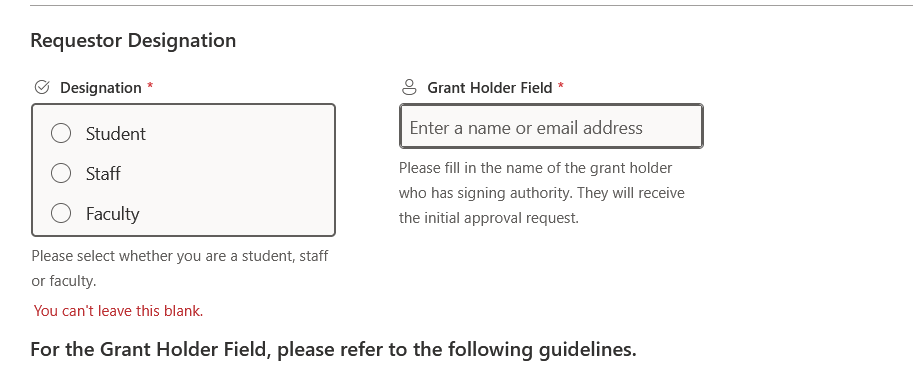
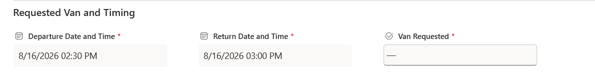
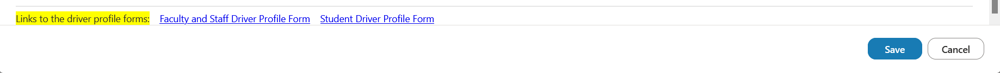

This work term, situated within the University of Guelph, was focused on modernizing the workflows for the Aqualab within the department of Integrative Biology (IB). Spanning between May 2026 to August 2026, I was tasked with creating a SharePoint for the Aqualab, alongside tools that would cut down on the amount of manual processes present.
For those who may be unfamiliar, I am pursuing an undergraduate degree with co-op in Computer Science within the University of Guelph. Thus there is an incentive to promote an atmosphere of educational endeavors, which brings me to the specific region of computer science that I was working with; the IB department was very accomodating in letting me learn about the tools that I needed to complete this term, and as such there was a major empahsis on product design and development cycle. Other relevant areas that were touched on included UI design, documentation and project management.
Goals
There were three main goals I wanted to accomplish throughout the work term, which were initially scoped to be fairly broad given the open nature of the position's projects. However, as the work term progressed, these goals materialized into a specific mindset that I approached my projects with in order to achieve the best results possible.
Learning new tools in Power Suite of products
My initial conception of this goal was that I would learn SharePoint and stick to the tools provided by it, as containing all of my projects to one tool would make my flows more robust against the many changes Microsoft makes to their products. However, I quickly learned about how restrictive its forms and lists ended up being, which prompted me to pivot to create Power Apps in order to meet the desired scope.
Through finding enw tools that accomodate limitations found in the Microsoft sutie of products, I had the ability to learn SharePoint's RESTful API, SharePoint tools, Lists, List forms, Power Apps and Power Automate.
Cutting down unnecessary backtracking
One of the most improtant programming principles is to cut down on the amount of manual work that needs to be done, and the amount of refactoring necessary by making a strong foundation. This was executed to a great extent by ensuring that every component I created would be modular, be it in Power Apps or in Power Automate.
The only instance of refactoring I had to do in my 4 months was to redesign the oversight form to match a change in scope, as values that were previously established as immutable were actually mutable. However, even in that case, that was an instance of acknowledging that manually indexing rows is the lesser of two evils (SharePoint's IDs always count up, so it is an unreliable method for syncronizing two lists); omitting row indices would force me to update a cached, doubly nested table, which would have been a logistical nightmare.
Taking clean, strong notes.
A key limitation of my workflow in the past was that I would not ask the correct questions during project briefings to fully understand the scope of a project. This term, I made a point to either bring some form of notetaking tool in order to take notes about any project I am being briefed on, and in doing so, categorize the notes in the form of a workflow. Hence, I am able to walk my manager through what the final flow would look like, and confirm whether there are any details I should consider.
This methodology works wonderfully with my notetaking style because it means I can hone in on specific inputs that I am expected to take, and then transform those inputs into something that can be useful. Addiitonally, explaining the big picture
Major Projects
Animal Oversight Form
In brief, the form was intended to do away with manually having to file the oversight information for the Aqualab animals that needed to be done every day, as the admin team had to manualyl input the information they recieve into a spreadsheet for archival purposes.
The project specifications were overall fairly simple. Using the Aqualab SharePoint, I would create a list that only admins can edit, and then a list for the user to have edit access, but not view access. This then allows me to create a Power App where the user can be subject to strict validation rules, and customizability akin to the kind I am familiar with in languages like Python.
Once the user submits their values, I can then save that information to a spreadsheet that only the admins can access.
The Animal Oversight Form
Van Rental Booking Form
In brief, renting a van from Integrative Biology took a lot of manual tracking and following up. This project aimed to cut down on that work by having users create entries in SharePoint, and then sending the appropriate approval requests to the parties involved, before then sending reminder emails on an automated timer.

The top of the van rental form, featuring questions related to the designation that the requestor belongs to
The project did not have a lot of details that aren't already addressed in the main workflow, as the data validation is handled within the List Form, and then entries are created between the administrator and the user view in order to make sure that the user only sees their bookings, and the admins can see every booking when necessary.

The timings and the requested van fields, with special note that the timings can be easily slotted through the calendar view

The bottom of the van rental form with the relevant links to the driver profile form, in case the user needs to fill that out first.
Aqualab Internal SharePoint
As mentioned previously, the college was interested in standardizing the content repositories for the institutions it oversees, and as such, I was initially tasked with making a SharePoint website for the Aqualab. While showing any specific images wouldn't be appropriate, I mainly want to note that it was very useful in letting me figure out how to make permission hierarchies; I have a theoretical understanding of the principle of least access, and other properties that help ensure users have the appropriate security levels. Thus, being able to impliment that in a live setting was very interesting.
Skills learned
In an interesting twist, the projects mentioned earlier were not unfamiliar territory to me. I developed a Python GUI based application for a work term last year, and as such, I already had some hands on experience with UI design and user validation. However, this term was very useful in teaching me how to work around the limitations of the tools I use, as I would usually have the versatility of tools like libraries, modules and other plugins in a coding language.
Additionally, coding languages, for the most part, have a lot of granular control in their design and execution, as you could use a logical language, or think modularly in line with Object Oriented Principles, or maybe even functional with something like Haskell. In stark contrast to that, Microsoft's products are a lot more restrictive, as they are marketed to non technical users. As such, I had to adopt strategies that I wasn't used to taking, for instance:
Power Apps does not use variables, so getting comfortable with using components as a stand in for classes, and then using generic references to avoid tedious work, was the most optimal way for me to make my apps
Power Automate does not have a very reliable method for referring to actions if and only if a previous action failed. For instance, an issue that has popped up is that the browser caching in Power Apps caused my refactored tables to break when having their JSON parsed because they were still using the old schema. Due to browser caching being a locally stored property, I had to pull the flow that I was using pre-refactoring, and have it run instead of the one that I presently use. However, in doing that, I have double the actions, with the major blocks doing essentially the same thing. I wasn't the greatest fan of this, however it just is an inherent limitation of the flow building system.
Conclusion
Overall, this workterm has been very informative in letting me work with some more restrictive tools, while also giving me the opportunity to find my own workarounds and fixes in order to create the applications I want. Additionally, it provided some experience into understanding security principles, collaborating with non-technical users, and managing projects in a manner where they can be delievered quickly with minimal bugs.